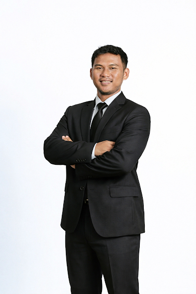

Chief Operating Officer01
Campus Innovate ↗
Leading operations and execution across educational programs, digital initiatives, training, events, and organizational projects.
A personal space · Bogor, Indonesia
Program Builder & Consultant
Working across training, operations, and institutional licensing. Always making room to learn along the way.

A place for the work I do, and the person behind it.
↓01 / What I’m working on
A mix of operating, building,
advising, and learning.
Leading operations and execution across educational programs, digital initiatives, training, events, and organizational projects.
Building an agricultural export business focused on Indonesian coffee and connecting local agricultural products with wider markets.
Supporting China–Indonesia logistics operations, with a focus on guide scheduling, service execution, and operational SOPs.
Part of a company working across corporate training, competency development, certification, advisory, and assessment.
Helping training institutions across Indonesia prepare licensing, institutional requirements, and related compliance documentation.
02 / The journey so far
Roles that shaped how I think about learning, people, systems, and execution.
Designed and improved training programs using participation data, learner behavior, and program evaluation. Visit Evermos ↗
Led competency certification operations, assessor coordination, certification delivery, and institutional management. Visit site ↗
Worked across administration, partnerships, training operations, legal documentation, and organizational coordination.
Co-founded PT Distributor Jajanan Kampus, a campus-focused snack distribution business.
Facilitated Meta Ads learning sessions for business and marketing participants.
03 / Personal projects
Ideas I keep coming back to,
outside day-to-day work.
A personal space for Qur’an reflection, journaling, dhikr, prayer times, and daily worship routines.
Explore Ruang Ayat ↗A personal reading space for books, journals, and notes. Capture ideas, connect what I learn, and put it to use.
Explore Ruang Tumbuh ↗Tulisan dan bacaan tentang keluarga, tanggung jawab, relasi, dan belajar menjadi ayah sebelum menjalaninya.
04 / Notes & reflections
Memuat tulisan dari Writing…
05 / A little beyond work
Some days at a desk.
Some days, a little further out.
A few frames from different sides of my life.
Buku yang sudah kubaca, dengan satu hal yang kubawa pulang.
Personal collection / 03
Catatan dari lapangan: membangun program, memimpin operasi, mengelola tim, dan hal-hal kecil yang mengubah cara kerja.
Personal collection / 04
Ruang yang lebih tenang untuk catatan tentang iman, relasi, tanggung jawab, dan belajar menjadi ayah. Bisa berisi tulisan sendiri maupun bacaan yang ingin disimpan.
Let’s connect
Work, collaboration, ideas, or just a useful conversation.
Say hello ↗